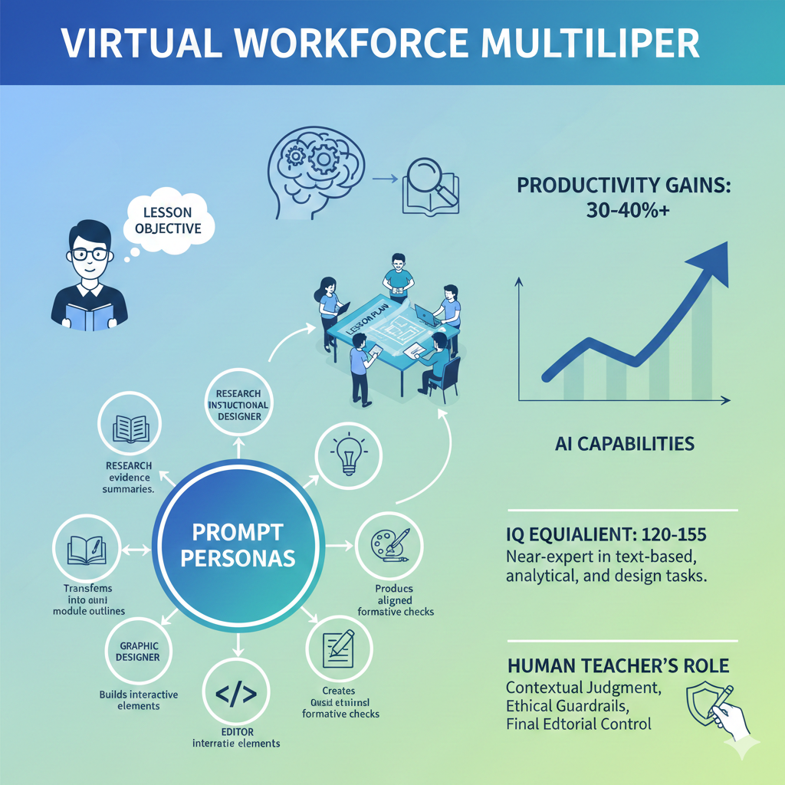

One Teacher.
A Whole Department.
Workforce multiplication is a strategy in which a single knowledge worker—using AI personas—effectively performs the coordinated work of multiple specialists simultaneously. For teachers, this means drafting, designing, assessing, and editing course materials in the time it used to take to do just one of those tasks.
The Core Principle
"Prompt personas let a teacher spin up a virtual department on demand, with an expert researcher, instructional designer, assessment specialist, graphic designer, web developer, and editor—all focused on the same lesson objective. When you name and define these roles in your prompts, you're not just changing tone; you are structuring the model's reasoning into distinct expert perspectives."
Why Personas Work
Naming a role in a prompt does more than set a tone. It activates a coherent cluster of reasoning patterns, priorities, vocabulary, and analytical lenses associated with that domain. An "Assessment Specialist" persona will naturally think about alignment, cognitive levels, and formative feedback—without you having to specify each of those criteria explicitly.
Your Role Remains Central. AI personas are powerful assistants, not replacements. You supply the contextual judgment, ethical guardrails, and final editorial control. The AI provides speed and breadth; you provide wisdom and accountability.
The Three-Step Multiplication Model
Effective workforce multiplication follows a simple pattern: Research → Design → Validate. A Research Librarian persona generates an evidence summary. An Instructional Designer transforms it into a module outline. An Assessment Specialist produces aligned formative checks. All within a single prep block.
Six Core Personas
for Course Development
Each persona below activates a distinct reasoning mode in the AI. Use them in sequence or in parallel, depending on your workflow. Click any card to learn more about how to prompt that persona effectively.
Research Librarian
Synthesizes current literature, identifies credible sources, and produces structured evidence summaries aligned to your topic. Ideal for grounding lesson content in scholarly or industry-validated knowledge.
Instructional Designer
Transforms raw content into pedagogically sound lesson structures using frameworks like Bloom's Taxonomy, UDL, and backward design. Produces module outlines, learning objectives, and scaffolded sequences.
Assessment Specialist
Generates formative and summative assessments aligned to your objectives. Produces rubrics, quiz items at specified cognitive levels, performance tasks, and self-assessment tools with answer keys.
Graphic Designer
Generates layout specifications, visual hierarchy recommendations, infographic scripts, slide design guidelines, and alt-text for accessibility. Translates complex ideas into visual communication plans.
Web Developer
Builds interactive HTML5 learning modules, quizzes, simulations, and activities. Handles responsive design, accessibility standards (WCAG 2.1), and LMS integration considerations like SCORM packaging guidance.
Editor & Quality Reviewer
Reviews all materials for clarity, consistency, reading level, alignment between objectives and assessments, and bias. Acts as a final cross-check before publication or delivery to students.
Pro Tip: You can run multiple personas in a single prompt session by separating them with clear headers or by running sequential prompts where each persona's output feeds the next. This creates a review chain—similar to having colleagues check each other's work.
What Tasks Benefit Most
from Multiplication?
Not all tasks benefit equally from AI persona assistance. Text-based, analytical, and design tasks show the highest gains. Tasks requiring live human judgment, student relationship management, or real-time facilitation remain primarily human-led.
| Task Type | Best Persona | Estimated Gain | Notes |
|---|---|---|---|
| Literature review & evidence summaries | Research Librarian | High 40%+ | AI excels at synthesis; always verify sources independently |
| Writing learning objectives | Instructional Designer | High 40%+ | Highly structured task; AI handles Bloom's alignment well |
| Drafting quiz items & rubrics | Assessment Specialist | High 35–45% | Review for cultural bias and discipline accuracy |
| Creating lesson outlines & syllabi | Instructional Designer | High 35–40% | Strong first drafts; customize for your institution's context |
| Writing slide content & speaker notes | Graphic Designer / Editor | Moderate 25–35% | Works best when you supply the key ideas; AI structures them |
| Building interactive HTML activities | Web Developer | High 50%+ | Dramatic savings vs. manual coding; test in target browsers |
| Writing case studies & scenarios | Research Librarian + Editor | Moderate 30–40% | Combine personas: research real context, then craft narrative |
| Differentiating materials for varied learners | Instructional Designer | Moderate 25–35% | AI can produce multiple reading levels or modality versions quickly |
| Providing student feedback on drafts | Editor | Moderate 20–30% | Useful for first-pass feedback; teacher adds relational context |
| Live classroom facilitation | — | Low / Human-Led | Real-time relationship and adaptive judgment remain human strengths |
The Limitation Reminder
AI personas operate at near-expert level for text-based, analytical, and design tasks. They do not replace your domain expertise, your relationships with students, your contextual knowledge of your institution, or your ethical accountability as an educator. Think of them as exceptional interns who are brilliant at drafting and need your expert review before anything goes live.
Key Research Finding: Studies on AI-assisted knowledge work consistently show productivity gains of 30–40% or more for "appropriately scoped tasks"—those with clear inputs, structured outputs, and established quality criteria. Course content development fits this profile well.
Three Complete Workflows
Using Persona Chaining
Each example below shows how to chain multiple AI personas within a single prep session to produce a complete, publication-ready course artifact. Click each example to expand the full workflow and sample prompts.
Building a New Lesson Module from Scratch
Cybersecurity · 3 personas · Est. 45 min vs. 3+ hrs manually
This workflow takes you from a bare topic ("Zero Trust Architecture") to a complete, assessment-aligned lesson module using three sequential personas.
Step 1 — Research Librarian
Generate an evidence summary with key principles, current industry adoption data, and 4–5 authoritative references (NIST guidelines, peer-reviewed sources).
Step 2 — Instructional Designer
Feed the evidence summary into this persona. Generate 3 learning objectives (Bloom's levels 3–5), a scaffolded 3-part lesson sequence, and a suggested student activity.
Step 3 — Assessment Specialist
Feed the objectives into this persona. Generate 5 formative questions, a scenario-based performance task, and a 4-point rubric. Request an answer key as a separate output.
Converting a Lecture into an Interactive Web Module
AI Literacy · 2 personas · Est. 30 min vs. 4+ hrs manually
You have an existing lecture or slide deck. This workflow converts it into a self-paced, interactive HTML5 learning module with embedded knowledge checks.
Step 1 — Instructional Designer
Restructure your existing content into a self-paced format with clear sections, navigation logic, and embedded checkpoint moments.
Step 2 — Web Developer
Convert the structured outline into a complete, single-file HTML5 interactive module with CSS styling, JavaScript-powered knowledge checks, and a progress tracker.
Cross-Checking Your Own Materials for Quality
Any Discipline · 1 persona · Est. 20 min — a step often skipped entirely
You've drafted a complete lesson. Before delivering it, use the Editor & Quality Reviewer persona to run a systematic alignment and bias check—the kind of peer review most instructors never have time for.
Step 1 — Editor & Quality Reviewer
Paste your full lesson package (objectives, content, assessments, rubric). The persona checks alignment, reading level, inclusive language, and logical flow—and returns a prioritized revision list.
Step 2 — Revise with Instructional Designer
Take the highest-priority revision items and ask the Instructional Designer persona to implement specific fixes, producing revised sections you can accept or modify.
This persona chain gives you a "virtual peer review" that most instructors never receive—especially for adjunct faculty or those at small institutions without a large departmental support structure. It takes 20 minutes instead of waiting weeks for a colleague's availability.